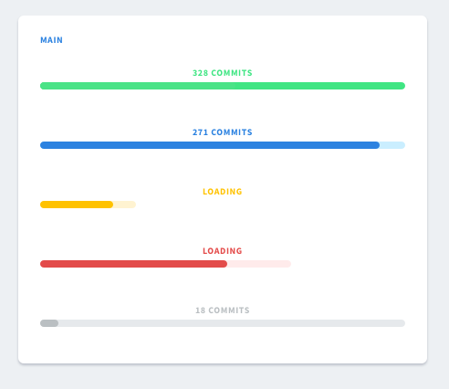
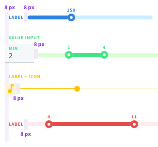

Vuestic 2.0 Redesign Notes
Last update: January 8, 2019.
What Is This Page?
The purpose of this document is to pay attention to specific details to be sure they won't be lost when implementing. It's a complimentary guide for Zeplin source files.
Completed Changes
- Colors
- Typography
- Buttons
- Inputs
- Dropdown selects
- Checkboxes, radio buttons
- Tabs
- Forms
- Cards & widgets
- Modals
- Icons
- Tables
- Notifications
- Toasts
- Tooltips
- Tree view
- Date pickers
- Color pickers
- Accordeon
- Timeline
- File uploaders
- Tags
- Progress Bars
- Sliders & Ranges
- Ratings
- [Upcoming] Wizard
Colors
Main colors are applied to texts, labels, secondary buttons, graphs, icons. The default 'black' text color is #34495E, but not #000.
 Light colors can't be calculated using lighten function, as they all have different shifts in hue and saturation. So it makes sense to set them apart from main 6 colors.
Light colors can't be calculated using lighten function, as they all have different shifts in hue and saturation. So it makes sense to set them apart from main 6 colors.
They are used as background colors for notifications, table
cells, text buttons. Dividers are light grey.
There is an extra Pale color that is a default color for even rows in tables.
Buttons have 6 gradients based on main colors.
 On hover we apply lighten 15%, on pressed — darken 15% for every element(solid color or gradient). The only differene is text buttons.
On hover we apply lighten 15%, on pressed — darken 15% for every element(solid color or gradient). The only differene is text buttons.
 Text buttons have one of the light colors on hover, and 15% of the main color extra as an overlay for pressed state.
Text buttons have one of the light colors on hover, and 15% of the main color extra as an overlay for pressed state.
Typography
The amount of text font styles was drastically reduced, font weights were limited to 400 regular and 700 bold.
- Regular 16/24 and 14/20 are used for plain texts, inputs, dropdowns, links, etc.
- Buttons and tabs share bold text style.
- Labels, table headings, section titles, widget & card titles share the same text style.
- 'Source Code Pro' font family for code snippets.
- H1—H6 styles were updated as well. Please pay attention to margins.

Buttons
 Labels in large and default buttons are shifted torwards top. Small button labels are vertically centered. The only difference — small secondary button.
Labels in large and default buttons are shifted torwards top. Small button labels are vertically centered. The only difference — small secondary button.
Right icon's (dropdown arrow) padding differs from the left side icon's one.
 Far left and right paddings are larger than the others.
Far left and right paddings are larger than the others.
Text button hover style differs from links behavior. Pressed button background will add extra 15% of the original color to its current background color value (e.g. 15% opacity Green overlay to a Light Green background for a Green text button).
Inputs
Placeholder position is slightly shifted torwards top border and is not vertically centered.
We should consider an alernative filled input layout — without a label and a value not changing its position (ex placeholder). It should be a default layout for Search.
Input labels share the same style as widget titles, table headings, sections titles and labels.
Dropdown Selects
Selected item is green, so is the hover style of an element. There are no checks on the right for a single choice dropdowns.
Selected items on a multiple choice dropdown have checks on the right. We might offer 2 types of displaying values: '# selected' or list picked items separated with commas.
Select option might have an icon. By default it's blue, on mouse over and when selected they turn green.
Checkboxes, Radio Buttons
Checkboxes have rounded corners.
There are 2 options for inline selects: with and without a label.
We should keep that in mind when building actions & settings blocks like the ones for tables.
Tabs
 Tabs are used to split large chunks of data/content into several simple screens. It works perfectly for forms. Tabs are centered with 40px margins between them. It's a bold text style with main black color for active and hover state, grey
for inactive.
Tabs are used to split large chunks of data/content into several simple screens. It works perfectly for forms. Tabs are centered with 40px margins between them. It's a bold text style with main black color for active and hover state, grey
for inactive.
Forms
There are 3 main layouts for forms. The first on is the full width layout. Inputs take the entire space except for 24px margins on the sides.
For fewer inputs and large modal/widgets, we can offer a centered layout. In this case we can setup a min-width around 400px and center the form horizontally.
For larger amount of inputs we can offer a 2 columns form layout.
Form groups is the other way to organize form elements.
Complex form may combine several solutions.
Cards & Widgets
Cards & widgets have much in common so we'll treat everything as cards. Though widgets are more about page structure, and cards are about content presentation.
Cards share the same paddings and header structure.
A card might have a header which might contain an action/actions in the upper right corner as icon/text button/button mini. Header height is 48px.
Cards might have different header styles. The default one is a blue label without any decorations. Offering several alternative solutions might be a useful feature. Green style has a blue label.
Modals
Modals have rounded corners and 60% black overlay as a background. We can offer several options for actions. Centered actions with a primary choice as a primary button and a secondary choice as a text button for Yes/No dialogs.
The other layout is with actions aligned to the different sides of the form. This works well for Next/Previous forms and any kind of wizards.
Modals might have an action as a button/icon in the upper right corner. Anyways the modal should be closed by clicking anywhere outside it.
Icons
There are few custom icons that are widely used through the theme. Vuestic 2.0 will be based on Material Outlined icons to offer a wide range of customization to users.
Tables
Table might have 2 types of labels: colorful circles on text labels. Rows/cells might have colorful backgrounds.
Inline actions might be links or buttons. They might be display permanently or shown on mouse over event.
Table headings share the same style as input labels, card titles, etc. They are green if the column is sortable, in other case the label has a default black color.
We can offer different types of navigation: pagination / with controls / with current page input, infinite loader, button 'Show more'.
Here is the way we can offer users to change column width manually by draggin the pins.
Let's take care of situation, if there is no data to display. The message will be vertically centered inside the table, bottom margin not ignored.
Notifications
 Notifications and buttons have different shadows. Notifications have lighter variation of main colors for backgrounds. Labels for notifications are the same as used in tables.
Notifications and buttons have different shadows. Notifications have lighter variation of main colors for backgrounds. Labels for notifications are the same as used in tables.
Toasts
Toasts remind of notifications as they share a lot of common styles. Color schemes stand for combination of background (light color) and icon styles (main color).
Tooltips
Tooltips have a lot of in common with toasts and notifications. The only difference is the place they appear and the width of the element.
Tree View
Tree view style has minor visual changes. Expand and collapse icons are 24px height and cover the entire block. That way they remain sharper than in 1.0 version. Updated dotted style and blue color for category icons.
Date Pickers
Date pickers extend the default input style and have a calendar material icon on the right. All colors were updated correspondingly. We might offer different date output formats, e.g. 'Oct 9, 2018', '10/09/2018'.
Date Pickers
Color pickers have the only change in predefined colors and its input style was updated correspondingly.
Accordeon
There are 2 types of accordeons: with and without a background. Up and down arrows are exactly the same icons that were used in selects.
Timeline
Timeline includes labels, cards and texts. All standart colors used.
File Uploaders
List preview reffers to a card style.
Basic uploaders include 'Delete' option as a text button but not a text link.
Progress Bars
 We'll focus on main progress bars. Buffer zone with a lighter background is set to 100% by default. But this can be changed and buffer can be dynamic. Labels have the same style as inputs, card titles, etc.
Sliders & Ranges
Sliders and ranges have the same style, so all the notes about sliders will be relevant to range pickers.
There are 2 types of label bottom marings: 2 px and 8 px. The smaller margins are used for sliders/ranges with value labels. In all other cases (inputs, icons, no value labels) 8 px margins should be used.
 All horizontal margins are 8 px wide: including the ones for labels, icons, value inputs, etc. Please note that left icons don't have left margins, right icons don't have right margins.
There is a small difference between inline layouts with left and right labels. Label on the left has an 8 px margin on the left to match the vertical line for all inputs. But you don't add that margin on the right for right labels.
Ratings
Ratings look like a set of icons that don't have any marings in between. Default size is 16 by 16, larger is 24 by 25, mini is 12 by 12. But we can also let define the size of the ratings control manually.